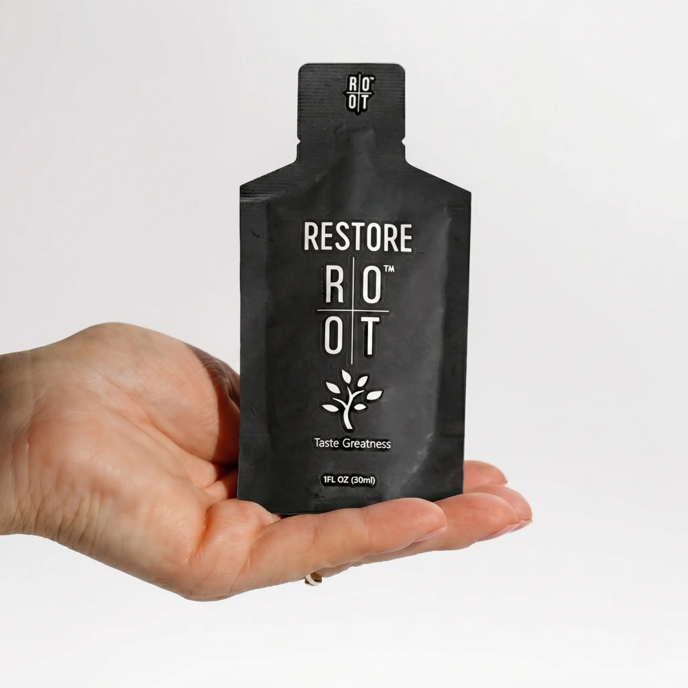
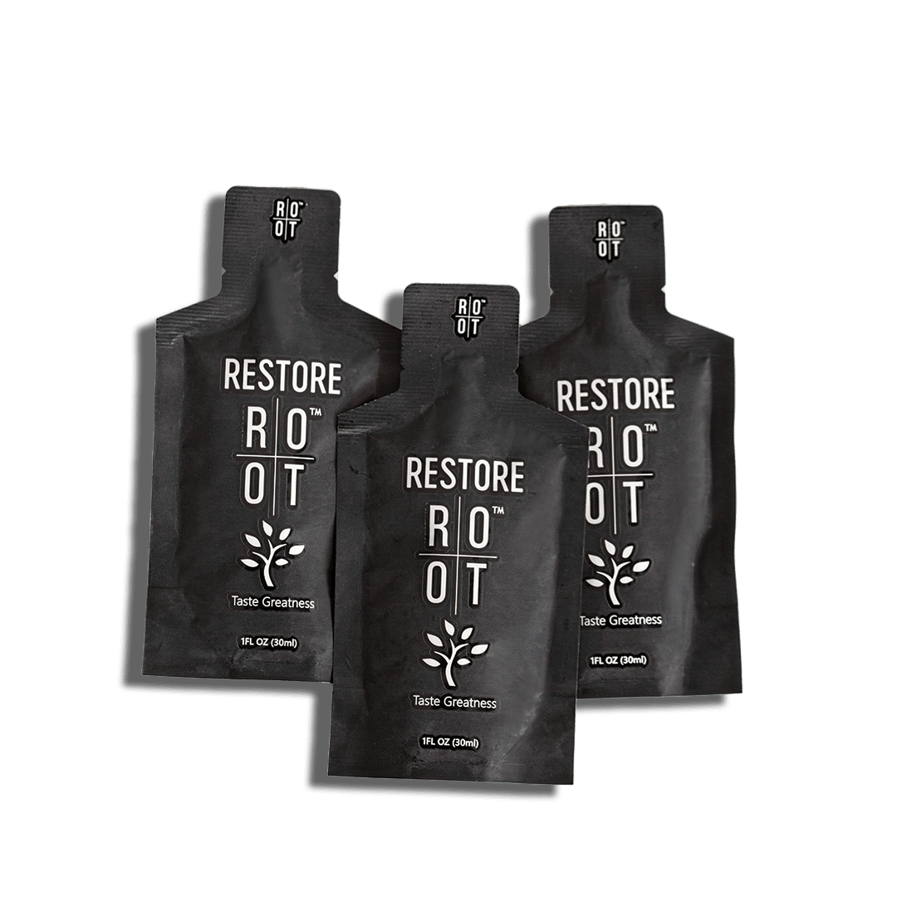
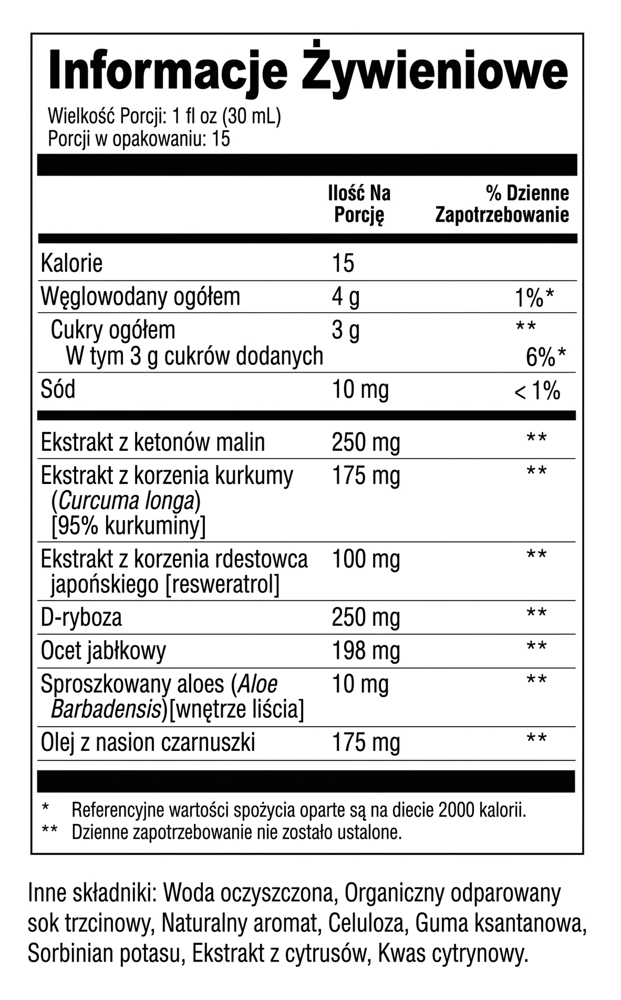

RESTORE
15 SASZETEK
Uczucie lekkości prosto z natury
- 🌿 Harmonia jelit — wspiera naturalną regenerację i równowagę mikrobiomu.
- 🧠 Jasność umysłu — zdrowa oś jelitowo-mózgowa oddala codzienne znużenie.
- 🍃 Komfort trawienny — roślinne esencje ułatwiają trawienie bez uczucia ciężkości.
- ⚡ Szybka energia — wysoka wchłanialność nie obciąża układu pokarmowego.
- 🛡️ Naturalna ochrona — dba o szczelną barierę jelitową i chroni komórki przed stresem.
Życie jest lepsze gdy masz
🥗Spokój po posiłku
🌻Popołudnia pełne sił
🚶♀️Swobodny, lekki krok
Główne składniki aktywne
Kurkuma

Aloes

Czarnuszka

Maliny
Ocet jabłkowy
Resweratrol
Ogromne zainteresowanie! Dołączyło już setki kobiet z całej Polski
Jednorazowy zakup

273,00 zł/ 15szt.
dr. Christina Rahm
biotechnolog i naukowiec farmaceutyczny
Stworzyłam Restore, ponieważ lata obserwacji potwierdziły jedno: Twoja energia, odporność i nastrój mają swoje źródło w jelitach. Dzisiejszy pośpiech, przetworzona żywność i stres systematycznie osłabiają tę naturalną barierę ochronną, co z czasem odczuwasz w całym ciele. Restore to moja odpowiedź. To codzienny rytuał, który działa u samych podstaw – łagodnie wspiera równowagę mikrobiomu i szczelność jelit. Gdy Twoje jelita odzyskują harmonię, Ty odzyskujesz siebie: budzisz się z nową energią, cieszysz się spokojnym trawieniem i witalnością, której od dawna Ci brakowało.
Wyciśnij zawartość saszetki bezpośrednio do ust lub rozpuść w szklance wody. Stosuj raz dziennie, najlepiej rano. Dla najlepszych efektów stosuj regularnie przez minimum 30 dni.
- 1/3 do 1 saszetki na początek
- Można stosować rano lub wieczorem, z jedzeniem lub bez
- Można dodawać do koktajli i jogurtów

Przechowywać w temperaturze pokojowej, z dala od wilgoci i bezpośredniego światła słonecznego. Trzymać z dala od dzieci.
Suplement diety. Nie stosować jako zamiennika zróżnicowanej diety. Przed zastosowaniem skonsultuj się z lekarzem, szczególnie w przypadku ciąży, karmienia piersią lub przyjmowania leków.
ROOT Brands, USA.
Zamówienia wysyłane w ciągu 1–2 dni roboczych. Dostawa do Polski w 3–5 dni.